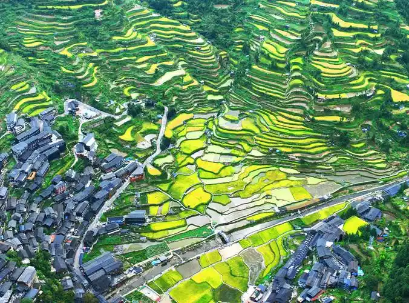
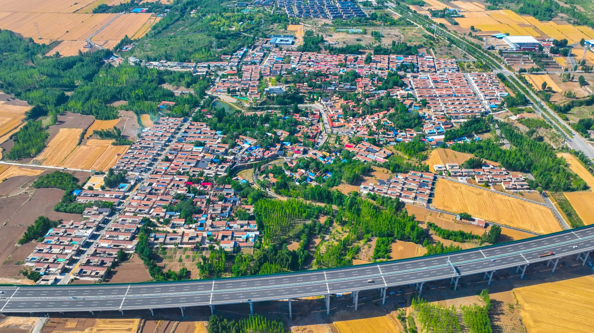
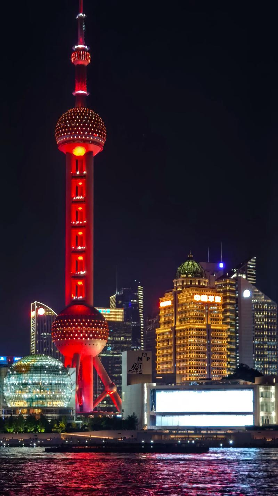
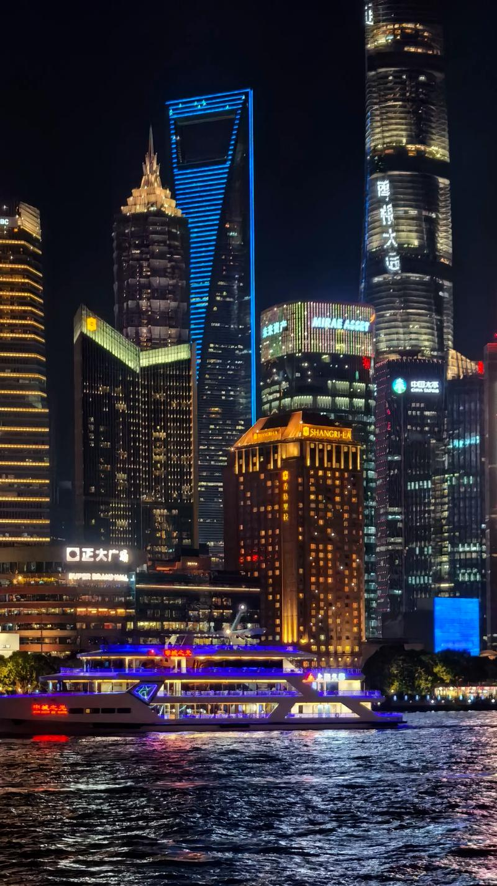

① 我的梦想
假如你是一位山区学生：你长大后有什么梦想？想去哪个城市？
降低山区贫困负担 · 为山区的孩子点亮走出大山的路
本平台围绕联合国 17 项可持续发展目标中的 优质教育（SDG 4）与 减少不平等（SDG 10）设计。 通过四个小环节，陪山区的孩子认识梦想、练习知识、获得物资、看见成长。
假如你是一位山区学生：你长大后有什么梦想？想去哪个城市？
小学2-5年级数学，共 15 题。考到 80 分及以上（每题约6分），就能去城里上学。
没考上就练错题，发放爱心物资；物资可兑换分数，分数越高名次越高。
整理你答过的每一道题、每一个答案，导出属于你的成长档案。
我们来自山野与村庄，也向往知识与城市的灯火。每一步努力学习，都是通往梦想的桥。




闭上眼睛想一想，长大以后的你，会是什么样子？
已保存！梦想已经种下 🌱
这是一场通往城里学校的数学测验。共 15 题（难度：小学2-5年级），考到 80 分及以上（每题约 6 分，满分约 100）即可解锁「去城里上学」。
📘 题目范围：覆盖小学 1-6 年级，逐级变难 —— 进城考 1-2 年级、市赛 2-3 年级、省赛 3-4 年级、国赛 5-6 年级
🎯 目标：考到 80 分及以上（百分制，满分 100）→ 免费进城上学 / 晋级更高榜单
💡 小贴士：答错的题会进入「错题练习」环节；每答对 1 题额外获得 1 份爱心物资 🎒
先考过「进城考试」，才能挑战市赛；市赛通过后解锁省赛；省赛通过后解锁国赛。每答对 1 题还额外获得 1 份爱心物资 🎒。
🏙️ 城里考过之后，还能冲刺「市赛 / 省赛 / 国赛」，层层晋级，登上更高的榜单！
每一次练习，都是离梦想更近一步。练对一题，就能收到一份爱心物资。
把你走过的每一步，整理成一份成长档案。
| # | 环节 | 题目 | 你的答案 | 正确答案 | 结果 |
|---|
分数越高，名次越靠前。考上城里学校、闯过市赛 / 省赛 / 国赛的同学，会获得额外加成。